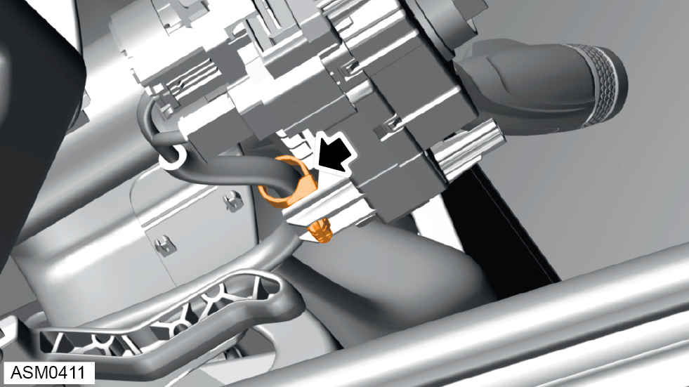
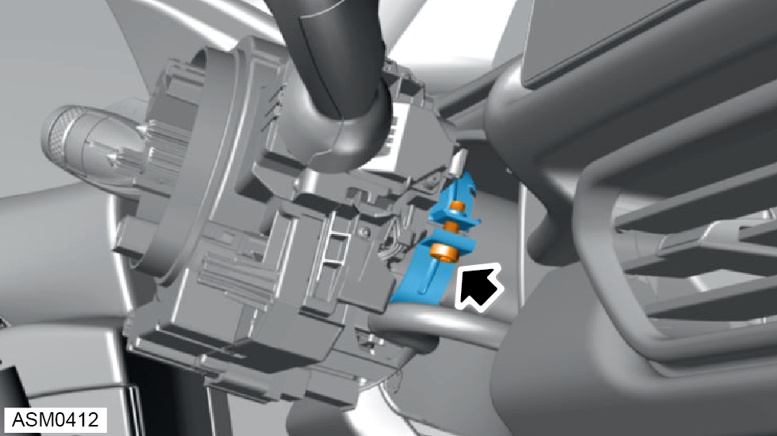
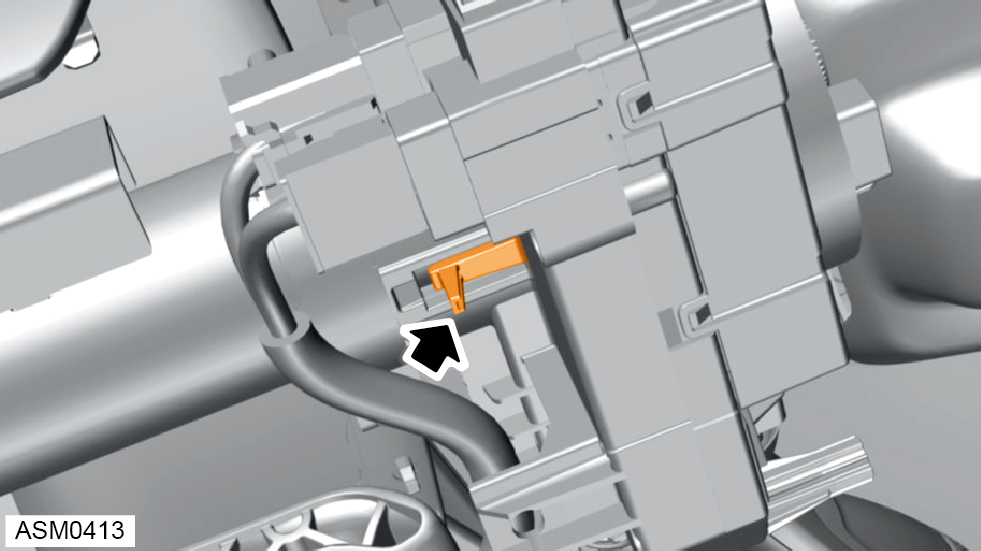
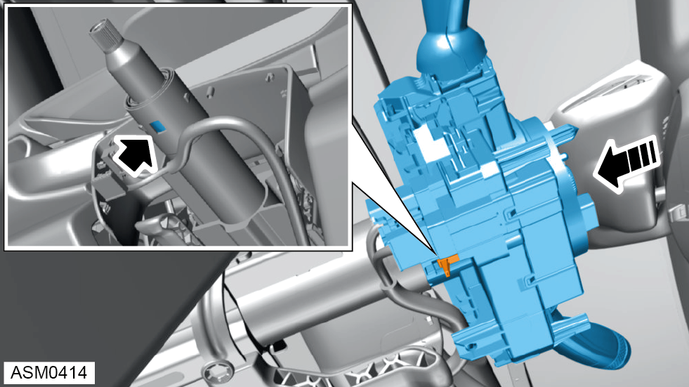

Drivers Stalk Module
Print
Operation Code: 17.35.03-02
Removal
- Remove lower steering column shroud. Refer to procedure.
- Remove upper steering column shroud. Refer to procedure.
- Remove steering wheel. Refer to procedure.

- Remove clip securing harness to stalk module.

- Loosen bolt securing stalk module to upper steering column until stalk module becomes loose.

- Release clip locating stalk module to upper steering column.
- Remove stalk module from upper steering column.
Installation
- Installation is the reverse of removal procedure except for the following:

- Push the stalk module on to the upper steering column until it stops and the clip locates to upper steering column.
NOTE: Make sure the airbag rotary contact is centralised before refitting stalk module.